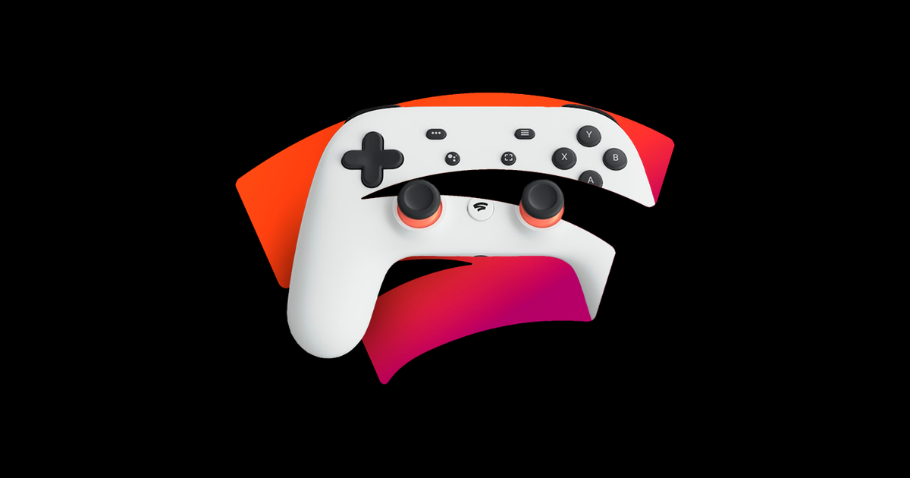

Google decide encerrar o Stadia no início de 2023
No passado dia 29, a Google anucia que vai encerrar o Stadia, com o streaming de games em nuvem permanecendo ativo para os jogadores até 18 de janeiro de 2023. A novidade foi revelada por Phil Harrison, vice-presidente e gerente geral do serviço, através de um post no blog da empresa.
Além disso, a multinacional norte-americana pretende reembolsar todo hardware, games e conteúdos complementares ligados à plataforma, com planos para que as devoluções sejam finalizadas até o primeiro mês do próximo ano.
"Alguns anos atrás, também lançamos um serviço de jogos para o consumidor, Stadia. E embora a abordagem dele para streaming de jogos para consumidores tenha sido construída em uma base tecnológica forte, ela não ganhou a tração com os usuários que esperávamos, então tomamos a difícil decisão de começar a encerrar nosso serviço de streaming Stadia", afirmou Harrison.
Boatos Confirmados
Vale ressaltar que muitos boatos sobre o fechamento do serviço já passaram a circular desde 2021, quando o número de jogos lançados na plataforma diminuiu drasticamente, e as poucas conexões da multinacional no mercado de games só ressaltava a probabilidade de um eventual cancelamento. Ainda de acordo com a publicação, muitos funcionários da equipe serão realocados para outros setores. Além disso, a tecnologia do Stadia será aplicada em outras vertentes da companhia e também disponibilizada para parceiros do setor. "A plataforma de tecnologia subjacente que alimenta o Stadia foi comprovada em escala e transcende os jogos. Vemos oportunidades claras para aplicá-la em outras partes do Google, como YouTube, Google Play e nossos esforços de Realidade Aumentada (AR), além de disponibilizá-la para nossos parceiros do setor, o que se alinha com o futuro dos jogos. Continuamos profundamente comprometidos com os jogos e continuaremos a investir em novas ferramentas, tecnologias e plataformas que impulsionam o sucesso de desenvolvedores, parceiros do setor, clientes e criadores de nuvem", disse Harrison.